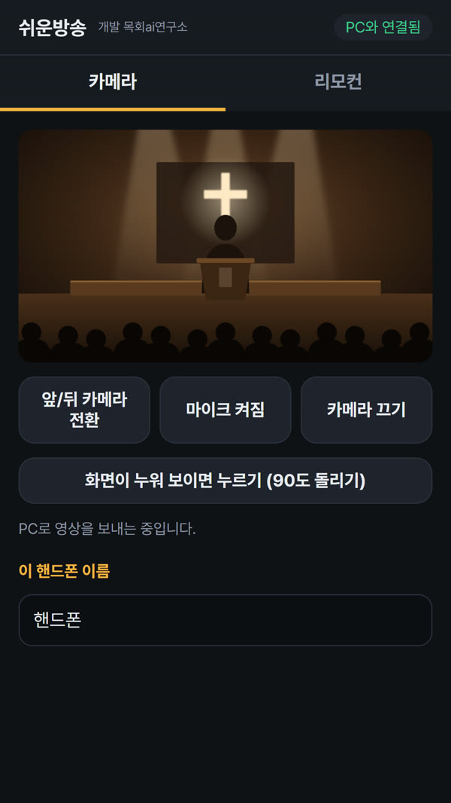
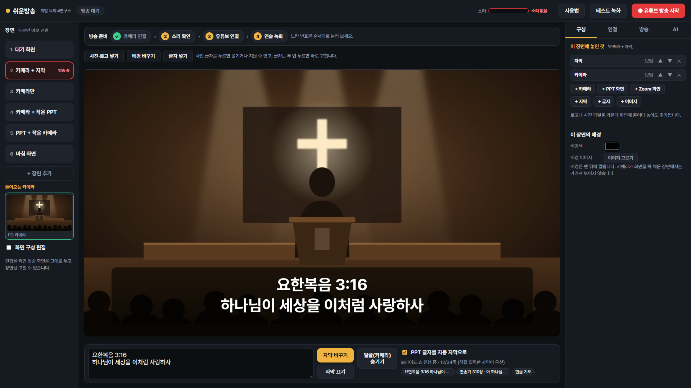
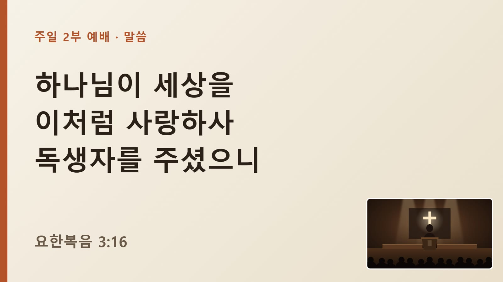
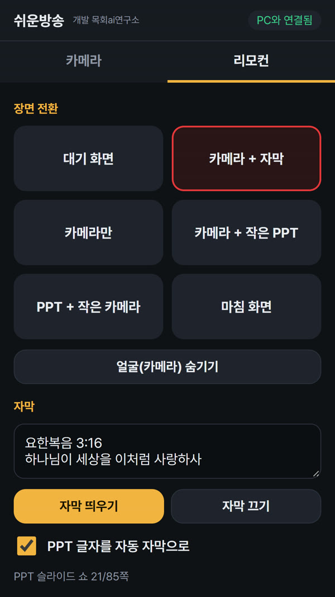

예배 방송을,
누구나.
핸드폰을 카메라로 쓰고, 버튼 하나로 유튜브 방송을 시작합니다. 방송 장비도, 어려운 설정도 필요 없습니다.
윈도우 10 · 11 | 설치 파일 약 118MB | 따로 받을 프로그램 없음
방송에 필요한 것만 남겼습니다
예배 순서대로 화면을 누르기만 하면 됩니다.
핸드폰이 카메라가 됩니다
PC 화면의 QR을 핸드폰으로 찍고 "카메라로 쓰기"를 누르면 끝입니다. 앱을 설치하지 않습니다. 영상은 인터넷을 거치지 않고 같은 와이파이 안에서 PC로 바로 갑니다.

장면은 누르면 바뀝니다
대기 화면, 카메라, 카메라와 자막, PPT와 작은 카메라, 마침 화면. 미리 만들어 둔 장면을 누르거나 숫자 키로 바꿉니다. 사진과 글자는 끌어서 옮기면 됩니다.

PPT 글자가 그대로 자막으로
파워포인트 슬라이드 쇼를 넘기면 그 쪽의 글자가 방송 자막으로 나옵니다. 직접 써서 띄울 수도 있습니다. 자동 자막은 윈도우용 파워포인트에서 됩니다.

리모컨도 핸드폰으로
자리에서 일어나지 않고 핸드폰으로 장면을 바꾸고 자막을 띄웁니다. 켤 때마다 장면을 스스로 백업하고, 지운 것은 되돌릴 수 있습니다.

- 예배 시작 카운트다운시작 시각만 정하면 대기 화면에 남은 시간이 나옵니다.
- 설교자 이름 자막이름과 직함을 화면 아래에 띄웁니다. 10초 뒤 스스로 꺼지게 할 수 있습니다.
- 설교자 화면 (프롬프터)강단의 태블릿이나 핸드폰에 시계, 지금 자막, 다음 슬라이드, 보낸 말을 크게 보여 줍니다.
처음 한 번만 준비하면 됩니다
프로그램 위쪽에 준비 순서가 표시됩니다. 노란 번호를 차례로 누르세요.
- 카메라 연결QR을 찍어 핸드폰을 카메라로
- 소리 확인핸드폰 마이크나 음향 장비
- 유튜브 연결스트림 키를 한 번 붙여넣기
- 연습 녹화유튜브로 나가지 않는 시험
내려받기
내 컴퓨터에 맞는 것을 받으세요. 프로그램 안에 필요한 것이 모두 들어 있습니다.
맥용은 아직 맥에서 충분히 확인하지 못한 시험판입니다. 안 되는 점이 있을 수 있습니다. 내 맥이 어느 쪽인지는 화면 왼쪽 위 사과 메뉴의 "이 Mac에 관하여"에서 볼 수 있습니다.
윈도우에 설치하기
- 받은 압축 파일을 마우스 오른쪽 버튼으로 눌러 모두 풀기를 합니다.
- 풀린 폴더의 설치 파일을 두 번 누릅니다. "Windows의 PC 보호" 창이 나오면 추가 정보 → 실행을 누릅니다.
- 바탕화면에 생긴 쉬운방송 아이콘으로 시작합니다.
- 처음 켤 때 방화벽 창이 나오면 허용을 누릅니다. 핸드폰 연결에 필요합니다.
맥에 설치하기 (시험판)
- 받은 압축 파일을 두 번 눌러 풉니다.
- 풀린 폴더의 install.command를 마우스 오른쪽 버튼(또는 control+클릭)으로 누르고 열기를 고릅니다. 경고가 나오면 한 번 더 열기를 누릅니다.
- 바탕화면에 생긴 쉬운방송을 두 번 눌러 시작합니다.
- 맥에서는 "PPT 글자를 자동 자막으로" 기능이 아직 되지 않습니다. 자막은 직접 입력해 주세요.
알아두실 것
- 핸드폰과 PC가 같은 와이파이에 있어야 합니다.
- 유튜브 채널에서 실시간 스트리밍을 처음 쓰는 경우, 유튜브가 사용 승인에 하루쯤 걸릴 수 있습니다. 주일 전에 미리 켜 보세요.
- 처음에는 비공개 방송이나 "테스트 녹화"로 한 번 연습해 보시길 권합니다.
- 스트림 키 같은 설정은 내 컴퓨터에만 저장됩니다.
궁금한 것은 카톡방에서
쓰다가 막히는 점, 바라는 기능을 목회ai연구소 카톡방에서 나눠 주세요. 새 소식도 이곳에서 알려 드립니다.